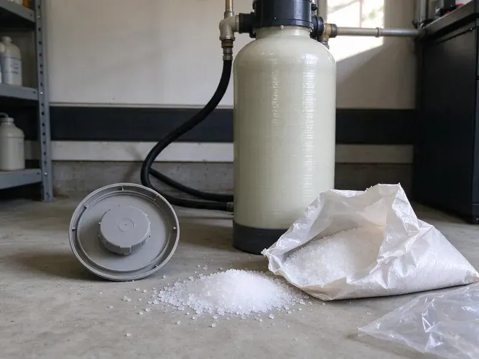

Water Heater Maintenance in Ames, IA
Keep your hot water supply consistent and trouble-free with professional water heater maintenance from KFR Plumbing in Ames, IA.
- Skilled, Certified Plumbers
- All Major Brands Serviced
- Upfront pricing
- Fast, Reliable Service
Expert Water Heater Service in Ames, IA.
Our team is standing by to provide the expert service your water heater needs to perform its best.
Reliable Water Heater Maintenance Services for Ames, IA Homes
KFR Plumbing provides comprehensive water heater maintenance to homeowners across Ames, IA. Private wells serve many rural homes, and nitrates, iron, and bacteria make routine well water testing an important habit. A long heating season keeps water heaters and boilers working hard, while summer humidity can cause sweating pipes and damp basements. Our service is built around those local conditions, keeping your hot water system reliable for years.
Our expertise includes:
- Inspecting anode rods
- Testing pressure relief valves
- Flushing sediment from tanks

Additional Plumbing Maintenance Services in Ames, IA
Our maintenance and specialty plumbing services in Ames, IA protect your home year-round and extend the life of every system.


Customers
Why Choose KFR Plumbing for Water Heater Maintenance in Ames, IA?
Proactive care by KFR Plumbing helps you save money on energy bills and extends the working life of your water heater, preventing expensive emergencies.
- Safety First, Inspecting components like the pressure relief valve keeps your water heater running safely, limiting risks like leaks or pressure buildup.
- Sediment Removal, We flush out the mineral buildup that causes rumbling, lukewarm water and premature failure.
- Energy Efficiency, A well-maintained water heater runs more efficiently, using less energy and lowering your monthly utility bills.
Citywide Coverage
KFR Plumbing proudly serves every neighborhood in Ames and the surrounding areas for water heater maintenance. We understand the varied housing types across Ames and tailor our maintenance approach to your system.
Experienced Team
Our technicians service brands like Rheem, A.O. Smith, Bradford White, State, Rinnai, Navien and Noritz. They know each manufacturer's maintenance needs and common wear points.
Safety-First Approach
Our technicians perform comprehensive safety checks, including gas line inspections, carbon monoxide testing, and pressure relief valve verification, giving you peace of mind about your water heater's operation and code compliance.
Trusted Certified Ames Plumbing Services Professionals
At KFR Plumbing, we take pride in providing certified plumbing services throughout Ames, IA. Backed by recognized industry credentials, our experienced plumbers combine technical skill with genuine customer care. Whether it is repair, installation, or maintenance, we follow strict safety and quality standards to deliver lasting results you can trust.
Call Us Now PHCC Plumbing Contractor Recognition
PHCC Plumbing Contractor Recognition Better Business Bureau (BBB) Accreditation
Better Business Bureau (BBB) Accreditation Angi Certified Pro
Angi Certified Pro ISO 9001 Quality Management Certification
ISO 9001 Quality Management CertificationThorough Water Heater Maintenance Services in Ames, IA
Preventative Maintenance Plans in Ames, IA
KFR Plumbing offers comprehensive preventative maintenance plans for homeowners in Ames, IA. These plans include annual or twice-yearly service appointments, priority scheduling, and sometimes discounts on repairs. Enrolling in a plan gives your water heater regular professional care, helping you avoid unexpected breakdowns and keep peak efficiency year-round. It's an investment in long-term reliability.

Electric Water Heater Element Service in Ames, IA
Electric water heaters use upper and lower heating elements controlled by thermostats. Sediment can coat the lower element and cause it to fail. We test both elements and thermostats with the power off and replace parts as necessary. A failed element is often the reason for lukewarm water or running out of hot water fast. Proper testing avoids replacing parts that are still good.
Anode Rod Inspection and Replacement in Ames
The anode rod is a sacrificial part in your water heater designed to corrode instead of the tank itself. Depending on your water chemistry, these rods can wear down faster than expected. During maintenance, we inspect the anode rod's condition and recommend replacement if necessary. A healthy anode rod is crucial for preventing rust and extending the lifespan of your water heater tank, saving you from a costly full replacement.
Standard Tank Water Heater Maintenance in Ames
Our standard tank water heater maintenance includes flushing the tank to remove sediment buildup. Private wells serve many rural homes, and nitrates, iron, and bacteria make regular well testing an important habit. We also inspect the anode rod, test the temperature and pressure relief valve, and check for any leaks or corrosion on the tank and connections. This service helps prevent premature failure and improves heating efficiency, keeping your energy bills down.
Tankless Water Heater Descaling in Ames
Tankless units are particularly sensitive to hard water scale, which clogs the heat exchanger and triggers error codes. We isolate the unit with its service valves and circulate a descaling solution with a pump for the recommended time. We also clean the inlet water filter and check the unit's error history. Most manufacturers recommend descaling at least once a year in hard water areas. Regular service keeps flow rates and temperatures steady.
Gas Water Heater Burner and Venting Check in Ames
Gas water heaters need a clean burner and a proper vent to run safely. We inspect the burner flame, clean the combustion chamber and check the thermocouple or flame sensor. The vent is checked for proper draft and secure connections. Blocked or loose vents can let carbon monoxide into your home. We also check the gas line and shutoff valve for leaks.
Preventative Maintenance for All Brands in Ames
Our team is experienced in maintaining all major water heater brands, including Rheem, AO Smith, Bradford White, Noritz, Rinnai, and more. Regardless of your unit's manufacturer, we have the tools and knowledge to perform the necessary checks and adjustments. We follow manufacturer guidelines so your warranty stays valid and your model gets the exact care it needs to run efficiently and reliably in your Ames home.

Tank Water Heater Flushing in Ames
Hard water leaves calcium and magnesium sediment at the bottom of the tank. This layer insulates the water from the burner or lower element, wasting energy and causing popping sounds. We connect a hose to the drain valve and flush the tank until the water runs clean. For heavy buildup, we may stir and flush in several cycles. A clean tank heats faster and runs more quietly.
Water Heater Tune-Ups Near Me in Ames, IA
Looking for dependable water heater maintenance "near me" in Ames, IA? KFR Plumbing is your local expert, providing prompt and professional service right in your neighborhood. We understand the needs of homes in this area and are always prepared to respond.
Our local team services water heaters in Ames every day. We know the brands and installation styles common in area homes, from garage tanks to attic units and wall-mounted tankless heaters. Most maintenance visits take about an hour.
KFR Plumbing at a Glance
- Licensed and insured plumbers serving Ames, IA
- 24/7 emergency service with same-day scheduling
- Upfront, flat-rate pricing before work begins
- 4.8-star rated by 620+ Iowa customers
Ames Map
Ames Information
- Population
- 65,686
- Area codes
- 515/641/712
- Service area
- Ames and communities within 40 miles
- Nearby
- Ankeny, Urbandale, Des Moines, Waukee
Regular water heater maintenance is crucial for homes in Ames, IA, because minerals in the water settle as sediment and reduce efficiency over time. Private wells serve many rural homes, and nitrates, iron, and bacteria make routine well water testing an important habit.
Expert Services
Trust our professionals for reliable KFR Plumbing solutions in Ames, IA.
Our Specialized Plumbing Services in Ames, IA
At KFR Plumbing, we provide a complete range of plumbing services across Ames, IA. From leak detection to full system installations, our team ensures fast, precise, and affordable service for both residential and commercial properties. Explore our core services below:


How Our Water Heater Maintenance Process Works in Ames, IA
From scheduling to completion, we make water heater maintenance simple and effective for every homeowner in Ames, IA.
Request a Quote
Call us at (515) 308-3583 or fill out our online form to schedule your water heater maintenance. We'll gather some basic information about your system and set up a convenient appointment time.
On-Site Inspection
Our certified technician will arrive on time and perform a comprehensive inspection of your water heater. This includes checking for leaks, corrosion, proper venting, and overall system health.
Thorough Maintenance
Based on the inspection, we'll perform necessary maintenance tasks like flushing the tank, testing valves, inspecting heating elements or burners, and checking the anode rod. We address all key components.
Frequently Asked Questions About Water Heater Maintenance in Ames
The cost of water heater maintenance in Ames, IA can range from $120 to $250, based on the type of water heater (tank or tankless) and the services required. This usually includes a full flush, anode rod inspection, and safety checks. More complex issues or parts replacement would be an additional cost.
Many homeowners can do a basic flush, but older drain valves can break or leak. A pro also tests safety valves, venting and gas connections.
No, you usually do not need a permit for routine water heater maintenance. Permits are generally required for new installations or major replacements to make sure they meet local building and plumbing codes in Ames.
Common signs include strange noises like rumbling or popping, rusty or discolored hot water, a rotten egg smell, reduced hot water supply, or a clear drop in water pressure. If you notice any of these, it's time for a professional check.
KFR Plumbing stands behind all our services with a robust workmanship warranty. We make sure our maintenance is performed correctly and effectively. Specific warranty details will be provided when service is complete.
KFR Plumbing services all major brands of water heaters, including Rheem, A.O. Smith, Bradford White, State, Kenmore, Noritz, Rinnai, and more. Our technicians are trained on a wide range of models and systems.
During a water heater flush, we drain the tank completely and then refill it, letting water flow out through the drain valve until it runs clear. This process removes mineral deposits and sediment that collect at the bottom of the tank, which can hurt efficiency and cause damage.
The anode rod is a metal rod inside your water heater that sacrifices itself to keep the steel tank from corroding. It attracts corrosive elements in the water. Regular inspection and replacement of a depleted anode rod are crucial for extending the lifespan of your water heater, especially where water quality varies.
What People Are Saying About Our Plumbing Experts?

Mark T.
When our office needed drain cleaning, KFR Plumbing provided quick, reliable service. The plumber arrived on time and made sure every drain flowed perfectly before leaving. Very satisfied.
Drain Cleaning · Des Moines, IA
Robert G.
The trenchless sewer replacement saved our front yard. They walked us through the camera inspection footage first so we knew exactly what we were paying for.
Sewer Line Replacement · Waukee, IA
Emily R.
I called KFR Plumbing for plumbing repair, and the technician was fast, polite, and thorough. They explained the problem clearly and fixed it the same day. I will definitely hire them again. Highly recommended!
Plumbing Repair · Urbandale, IAJames P.
Our commercial plumbing system had a leak under the sink, and KFR Plumbing handled it professionally. The plumbers arrived quickly and restored everything without disruption to our customers.
Commercial Plumbing · Urbandale, IA
Daniel K.
A pipe burst at 11 pm and they actually answered. The plumber showed up within the hour, shut everything down, and had us back to normal the next morning. Could not ask for more.
Emergency Plumbing · West Des Moines, IA
Laura S.
I scheduled a water heater replacement, and the team made the process smooth and affordable. The new unit works perfectly, and they cleaned up after completing the job.
Water Heater Replacement · Des Moines, IA